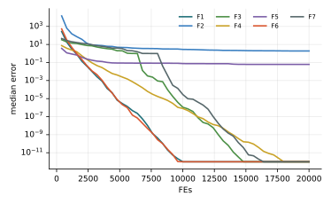

Chương 16 · Phần VChapter 16 · Part V
Tiến hóa, lai ghép và cảm hứng lượng tửEvolutionary, hybrid and quantum-inspired swarmsGA, GA-PSO và QPSOGA, GA-PSO and QPSO
Châu Văn Vân · PTITHCM
Mục tiêu bài họcLearning objectives
Sau chương này, bạn có thểAfter this chapter you will be able to
- Mô tả giải thuật di truyền mã hóa thực: chọn lọc, lai SBX, đột biến đa thức.Describe the real-coded genetic algorithm: selection, SBX crossover, polynomial mutation.
- Phân loại các cách lai ghép metaheuristic theo Talbi (2002).Classify hybrid metaheuristics following Talbi (2002).
- Giải thích GA-PSO: bước PSO rồi thay nửa kém bằng con lai.Explain GA-PSO: a PSO step, then replace the worse half with offspring.
- Giải thích QPSO: hạt không có vận tốc, vị trí lấy mẫu quanh điểm hút.Explain QPSO: no velocity; positions are sampled around an attractor.
Ý tưởngIdea
Hai cách nhìn về một quần thểTwo views of one population
- Giải thuật di truyền (Holland, 1975): quần thể thay thế theo thế hệ; thông tin truyền qua lai ghép và đột biến.Genetic algorithms (Holland, 1975): the population is replaced generation by generation; information passes through crossover and mutation.
- Bầy đàn: cá thể sống lâu, có trí nhớ (pbest), học từ cá thể tốt nhất.Swarms: individuals persist, keep memory (pbest) and learn from the best.
- Tìm kiếm Tabu (Glover, 1989): một lời giải, cấm quay lại các nước đi gần đây; thường dùng để tinh chỉnh trong thuật toán lai.Tabu search (Glover, 1989): a single solution with forbidden recent moves; often used for refinement inside hybrids.
Phân loại lai ghép (Talbi, 2002)Hybrid taxonomy (Talbi, 2002)
- Mức thấp / mức cao: thay một toán tử bên trong, hay ghép hai thuật toán nguyên vẹn.Low / high level: replace an inner operator, or combine two whole algorithms.
- Nối tiếp / đồng thời: chạy lần lượt hay cùng lúc trên các quần thể con.Relay / teamwork: run one after another, or together on sub-populations.
Các bướcSteps
Các bước của GA mã hóa thựcReal-coded GA step by step
Cài đặt trong giáo trình: giải đấu kích thước 2, SBX ηc = 20, đột biến đa thức ηm = 20, 2 cá thể ưu tú.This book's implementation: tournament size 2, SBX ηc = 20, polynomial mutation ηm = 20, 2 elites.
- Khởi tạo ngẫu nhiên n cá thể và đánh giá.Initialize n random individuals and evaluate them.
- Giữ 2 cá thể tốt nhất sang thế hệ mới.Copy the 2 best individuals into the new generation.
- Chọn cha mẹ bằng giải đấu nhị phân.Pick parents by binary tournament.
- Lai SBX với xác suất pc = 0.9; đột biến đa thức với xác suất 1/D mỗi gen.SBX with probability pc = 0.9; polynomial mutation with probability 1/D per gene.
- Đánh giá thế hệ con; lặp đến hết ngân sách.Evaluate the offspring; repeat until the budget is spent.
2 – 5 vòng lặp chínhmain loop
Mô hình toán họcMathematical model
Lai SBX và cập nhật lượng tửSBX crossover and the quantum update
- SBX (Deb & Agrawal, 1995) mô phỏng lai một điểm nhị phân: con nằm gần cha mẹ khi η lớn.SBX (Deb & Agrawal, 1995) mimics binary one-point crossover: children stay near parents when η is large.
- QPSO (Sun, Feng & Xu, 2004): mbest là trung bình các pbest; βQ giảm từ 1.0 xuống 0.5.QPSO (Sun, Feng & Xu, 2004): mbest is the mean pbest; βQ decreases from 1.0 to 0.5.
- Thừa số ln(1/u) cho phân phối đuôi mũ: đôi khi nhảy rất xa.The ln(1/u) factor gives an exponential tail: occasional long jumps.
Thuật toánAlgorithm
Lưu đồFlowchart
Tham sốParameters
Tham số GA, GA-PSO, QPSOGA, GA-PSO, QPSO parameters
| Tham sốParameter | Ý nghĩaMeaning | Giá trị thường dùngTypical value |
|---|---|---|
| pc, ηc | Xác suất và chỉ số phân phối của SBXSBX probability and distribution index | 0.9, 20 |
| pm, ηm | Xác suất và chỉ số của đột biến đa thứcPolynomial mutation probability and index | 1/D, 20 |
| sel | Tỉ lệ bầy bị thay trong GA-PSOShare of the swarm replaced in GA-PSO | 0.5 |
| w, c1, c2 | Hệ số PSO trong GA-PSOPSO coefficients in GA-PSO | 0.9→0.4, 2, 2 |
| βQ | Hệ số co–giãn của QPSOQPSO contraction–expansion coefficient | 1.0 → 0.5 |
Mô phỏngSimulation
GA trên cùng địa hìnhGA on the same landscape
Mỗi bước là một thế hệ: hai cá thể ưu tú (viền đậm) được giữ, phần còn lại là con lai SBX và đột biến.Each step is one generation: two elites (bold outline) survive; the rest are SBX children with mutation.
Quan sát: quần thể co về vài vùng tốt; khi mất đa dạng, chỉ đột biến mới tạo được bước nhảy.Watch the population shrink toward a few good regions; once diversity is lost, only mutation can jump.
Ví dụ tính tayWorked example
SBX với cha mẹ 2 và 4, η = 20SBX with parents 2 and 4, η = 20
- u = 0.3: c1 = 2.024, c2 = 3.976 (con nằm trong đoạn cha mẹ).u = 0.3: c1 = 2.024, c2 = 3.976 (children inside the parents' range).
- u = 0.8: c1 = 1.9554, c2 = 4.0446 (con ra ngoài một chút).u = 0.8: c1 = 1.9554, c2 = 4.0446 (children slightly outside).
Một bước QPSOOne QPSO step
- pbest = 1, gbest = 2, φ = 0.5: p = 1.5.pbest = 1, gbest = 2, φ = 0.5: p = 1.5.
- mbest = 2.5, x = 3.5, β = 0.8, u = 0.4: L = 0.8 · 1 · ln 2.5 = 0.733.mbest = 2.5, x = 3.5, β = 0.8, u = 0.4: L = 0.8 · 1 · ln 2.5 = 0.733.
- Vị trí mới x = 2.233 hoặc 0.767, mỗi khả năng xác suất 1/2.New position x = 2.233 or 0.767, each with probability 1/2.
Thực nghiệm · chương 16Experiment · chapter 16
Trung vị sai số, D = 10, 20 000 lần đánh giá, 30 lần chạyMedian error, D = 10, 20,000 evaluations, 30 runs
| Thuật toánAlgorithm | F2F2 | F3F3 | F5F5 | F7F7 | HạngRank |
|---|---|---|---|---|---|
| GA | 6.99e+0 − | 7.46e−4 + | 8.18e−2 + | 7.89e−4 + | 12.00 |
| QPSO | 5.90e+0 − | 3.75e+0 ≈ | 5.99e−2 + | 3.78e+0 ≈ | 7.64 |
| PSO | 4.34e+0 | 3.98e+0 | 1.10e−1 | 4.01e+0 | 8.21 |
| GAPSO | 1.89e+0 + | 0 + | 6.14e−2 + | 0 + | 5.93 |
F2 Rosenbrock, F3 Rastrigin, F5 Griewank, F7 Rastrigin dịch tâm. +/−/≈: tốt hơn / kém hơn / không khác PSO (Wilcoxon, α = 0.05). Hạng Friedman trong 23 phương pháp (GA-PSO thứ 2, PSO thứ 7). GA giải Rastrigin tốt hơn PSO rõ rệt nhưng kém trên các hàm đơn đỉnh (F1, F4, F6 không đạt 10−8); GA-PSO kết hợp được cả hai và đứng đầu nhóm này.+/−/≈: better / worse / no different from PSO (Wilcoxon, α = 0.05). Friedman rank among 23 methods (GA-PSO places 2, PSO places 7). GA solves Rastrigin far better than PSO but lags on unimodal functions (F1, F4, F6 miss 10−8); GA-PSO combines both and leads this group.
Thực nghiệmExperiment
Đường hội tụ của GA-PSOGA-PSO convergence curves
- Trung vị sai số theo số lần đánh giá trên 7 hàm, 30 lần chạy.Median error versus evaluations on 7 functions, 30 runs.
- Trung vị của GA-PSO đạt 10−8 trên F3, F7, nơi PSO kẹt quanh 4.GA-PSO's median reaches 10−8 on F3 and F7, where PSO stalls near 4.
- F2 Rosenbrock vẫn là hàm khó nhất cho cả nhóm.F2 Rosenbrock remains the hardest function for the whole group.

Các biến thểVariants
Họ thuật toán lai và lượng tửHybrid and quantum families
PSO có chọn lọcPSO with selection
Thay nửa kém bằng bản sao nửa tốt (Angeline, 1998).Replace the worse half with copies of the better half (Angeline, 1998).
HGAPSOHGAPSO
GA và PSO cùng tiến hóa quần thể mạng hồi quy (Juang, 2004).GA and PSO jointly evolve recurrent networks (Juang, 2004).
QPSOQPSO
Hạt hành xử như trong giếng thế lượng tử (Sun và cs., 2004).Particles behave as in a quantum potential well (Sun et al., 2004).
QIEAQIEA
Cá thể là chuỗi qubit; cổng xoay cập nhật xác suất (Han & Kim, 2002).Individuals are qubit strings; rotation gates update probabilities (Han & Kim, 2002).
Mã nguồnSource code
Mã nguồn PythonPython source code
Đoạn trích phần cập nhật chính; tệp đầy đủ có chú thích và tham số mặc định theo bài gốc.Excerpt of the main update; the full file documents the default parameters of the original paper. code/si/algorithms/qpso.py
while not prob.done: t += 1 beta = b_max - (b_max - b_min) * t / T g = P[np.argmin(pf)] mbest = P.mean(axis=0) phi = rng.random(X.shape) p = phi * P + (1 - phi) * g u = rng.random(X.shape) sign = np.where(rng.random(X.shape) < 0.5, 1, -1) X = prob.clip(p + sign * beta * np.abs(mbest - X) * np.log(1 / u)) f = prob(X) better = f < pf P[better], pf[better] = X[better], f[better]
Chạy lại toàn bộ thực nghiệm: python -m experiments.run_continuous trong thư mục code/ (xem PROTOCOL.md).Reproduce all experiments: python -m experiments.run_continuous inside code/ (see PROTOCOL.md).
Đánh giáAssessment
Lai ghép: hiệu quả nhưng phải chứng minhHybrids: effective, but must be justified
Điểm mạnhStrengths
- GA-PSO đứng thứ 2/23, trên cả GA và PSO gốc.GA-PSO ranks 2/23, above both plain GA and PSO.
- QPSO chỉ có một tham số và không cần giới hạn vận tốc.QPSO has a single parameter and needs no velocity limit.
- Lai ghép cho phép kết hợp điểm mạnh khám phá và khai thác.Hybrids combine exploration and exploitation strengths.
Hạn chế và biến thểLimitations and variants
- QPSO không khác PSO có ý nghĩa trên 4/7 hàm trong thực nghiệm này.QPSO is not significantly different from PSO on 4/7 functions in this experiment.
- Thêm thành phần là thêm tham số; cần thí nghiệm loại bỏ từng thành phần.More components mean more parameters; ablation studies are needed.
- “Lượng tử” ở đây chỉ là phép ẩn dụ; không chạy trên máy tính lượng tử.“Quantum” is only a metaphor here; nothing runs on a quantum computer.
Bài tập và thực hànhExercises and labs
Luyện tập: tính tay rồi lập trìnhPractice: by hand, then in code
Bài tập lý thuyếtTheory exercises
- Tính con SBX với cha mẹ 1 và 5, η = 2, u = 0.9.Compute SBX children for parents 1 and 5, η = 2, u = 0.9.
- Xếp GA-PSO và QPSO vào phân loại của Talbi.Place GA-PSO and QPSO in Talbi's taxonomy.
- Vì sao QPSO không cần vmax?Why does QPSO need no vmax?
Thực hành Python / MATLABPython / MATLAB labs
- Thí nghiệm loại bỏ: GA-PSO không đột biến, và với sel = 0.25.Ablation: GA-PSO without mutation, and with sel = 0.25.
- Lai PSO với tìm kiếm cục bộ Nelder–Mead ở cuối quá trình.Hybridize PSO with a final Nelder–Mead local search.
- So sánh QPSO với PSO trên F1–F7 ở D = 30.Compare QPSO and PSO on F1–F7 at D = 30.
Tài liệu tham khảo (1/2)References (1/2)
Đọc thêm: các bài báo gốcFurther reading: the original papers
- J. H. Holland, Adaptation in Natural and Artificial Systems. Ann Arbor, MI, USA: Univ. Michigan Press, 1975.
- F. Glover, “Tabu Search—Part I,” ORSA Journal on Computing, vol. 1, no. 3, pp. 190–206, 1989, doi: 10.1287/ijoc.1.3.190.
- K. Deb and R. B. Agrawal, “Simulated binary crossover for continuous search space,” Complex Syst., vol. 9, no. 2, pp. 115–148, 1995.
- P. Angeline, “Using selection to improve particle swarm optimization,” in 1998 IEEE International Conference on Evolutionary Computation Proceedings. IEEE World Congress on Computational Intelligence (Cat. No.98TH8360), 1998, pp. 84–89, doi: 10.1109/ICEC.1998.699327.
- K.-H. Han and J.-H. Kim, “Quantum-inspired evolutionary algorithm for a class of combinatorial optimization,” IEEE Trans. Evol. Computat., vol. 6, no. 6, pp. 580–593, 2002, doi: 10.1109/TEVC.2002.804320.
- E.-G. Talbi, “A Taxonomy of Hybrid Metaheuristics,” Journal of Heuristics, vol. 8, no. 5, pp. 541–564, 2002, doi: 10.1023/A:1016540724870.
- C.-F. Juang, “A Hybrid of Genetic Algorithm and Particle Swarm Optimization for Recurrent Network Design,” IEEE Trans. Syst., Man, Cybern. B, vol. 34, no. 2, pp. 997–1006, 2004, doi: 10.1109/TSMCB.2003.818557.
Tài liệu tham khảo (2/2)References (2/2)
Đọc thêm: các bài báo gốcFurther reading: the original papers
- J. Sun, B. Feng, and W. Xu, “Particle swarm optimization with particles having quantum behavior,” in Proceedings of the 2004 Congress on Evolutionary Computation (IEEE Cat. No.04TH8753), 2004, pp. 325–331, doi: 10.1109/CEC.2004.1330875.
- M. O. Okwu and L. K. Tartibu, Metaheuristic Optimization: Nature-Inspired Algorithms Swarm and Computational Intelligence, Theory and Applications. Springer International Publishing, 2021, doi: 10.1007/978-3-030-61111-8.
Tóm lạiIn short
Cảm ơn các bạn đã theo dõiThank you for your attention
Châu Văn Vân · PTITHCM · Tài liệu gốc: Talbi, Journal of Heuristics 8(5), 2002Original paper: Talbi, Journal of Heuristics 8(5), 2002